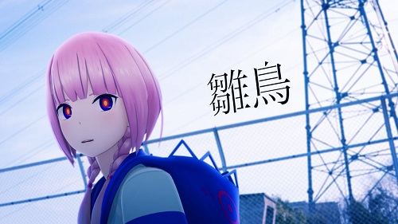

.png)
自己紹介
| 𠮷田 琢人 | Yosida Takuto |
|---|---|
| 血液型 | B型 |
| 生年月日 | 10月26日生まれ |
| 出身出生地 | 愛知県額田郡幸田町 |
| 身長 / 体重 | 171cm / 68kg |
怒ることはあまりありません（危害を加えられたり自分のものに嫌がらせした場合以外）
好きな言葉
話し合い、耳を傾け、承認し、任せてやらねば、人は育たず。
やっている、姿を感謝で見守って、信頼せねば、人は実らず。 」
「真実は時の娘なり」
「他人は自分が思っているほど誰かのことなんて見ていない。」
「客観的とは誰かの主観にしか過ぎない」
特技
特にシガーボックスと日本軍の艦艇や戦闘機を見分けるのには自信があります。
趣味
絵描き
読書
小説

漫画
「旧校舎の幽霊」など、さまざまな怪談や都市伝説が生徒の間で語り継がれてきた創立60年の伝統を誇る私立高校の男子生徒が旧校舎に迷い込んだ際に不思議な女子生徒に出会う。
彼女は「旧校舎の幽霊」こと庚夕子であると名乗り、自分の死の真相を解明するために協力して欲しいと申し出るそんな始まりの作品です。
本作はロールプレイングゲームの要素を含んだファンタジーの世界が舞台で、王道ファンタジーを皮肉るギャグがあるのも特徴の作品です。
ゲーム
War Thunderは日 独 伊 米 英 ソ 仏 瑞 の戦間期から21世紀初頭までの航空機・戦車、艦艇をテーマとするPC PS4 Xbox Oneで出来る基本無料のMMOコンバットゲームをやっています。
もし航空機や戦車 艦艇に興味がある方はやってみてはどうでしょうか。

筋トレ
もともと武道を習っていたので体を動かすのは好きでしたが、ここまでハマるとは思ってなかったです。
音楽 ※音楽を再生する際はスピーカーのボリュームが20以上になっていないか確認してから再生してください。
ヨルシカさんは最近テレビのCMにも音楽が使われているので知っている方も多いと思います、おすすめの曲は
「逃亡」
「思想犯」
「ヒッチコック」
ヴォーカルのsuis（スイ）さんの歌声が聴いていて心地が良くよく聞いています。
カンザキイオリさんの動画は文字が主体となっている独自のスタイルです。おすすめの曲は
「あの夏が飽和する。」
「死ぬとき死ねばいい」
「命に嫌われている。」
カンザキさんの曲は物語性があって小説を読んでいるかのような感覚になります。
花譜さんは特徴的な服装とあどけなさが残るハスキーで存在感のある歌声が特長の16歳のバーチャルシンガーです。
おすすめの曲は
「戸惑いテレパシー」
「雛鳥」

「過去を喰らう」
花譜さんの動画は実写と合成された3Dアニメーションで作られており実際にそこにいるかのような動画となっています。
理芽さんは花譜さんと同じレーベルに所属している、花譜さんと似て非なる歌声を持つバーチャルシンガーです。
おすすめの曲は
「ユーエンミー」
「食虫植物」
「Flowering」
食虫植物は2000万回以上再生されています、また花譜さん同様実際にそこにいるかのような動画です。
まとめ
文章などを読みやすくするだとか、別のページに移動したときに画像や文字のポップアップだとか色々と自分の知識、実力不足でやりたかったことの半分ほどしかできなかったです。
もう少し何か出来たんじゃないかと思うと悔しいですが以上で自己紹介を終えます。ここまで見てくださってありがとうございます。
参考元
imasashi.net：文字・画像エフェクトを参考 LITTLETHINGS：ページ遷移時のエフェクトを参考
コトダマウェブ：ページのトップへの移動を参考 workship：画像アニメーションを参考